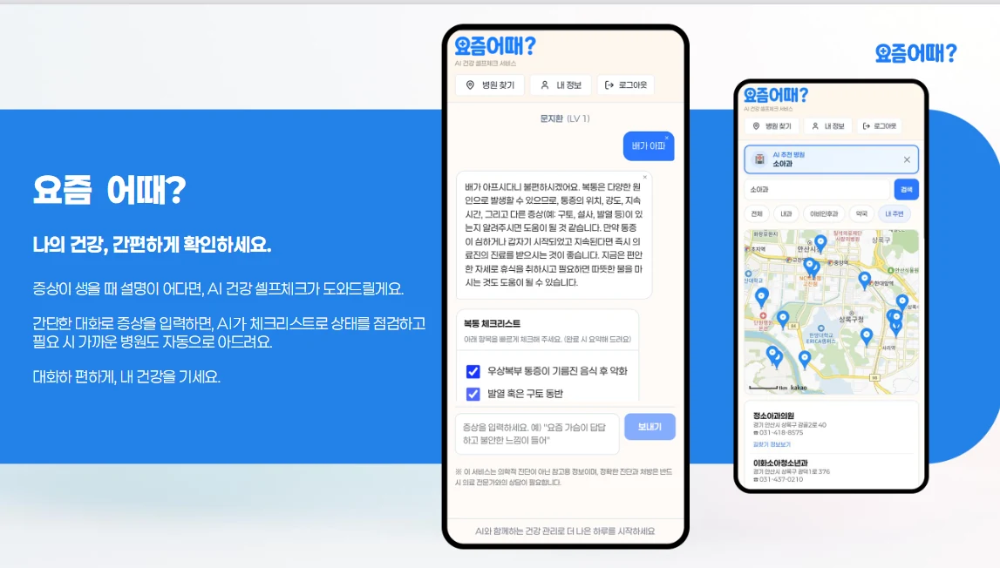
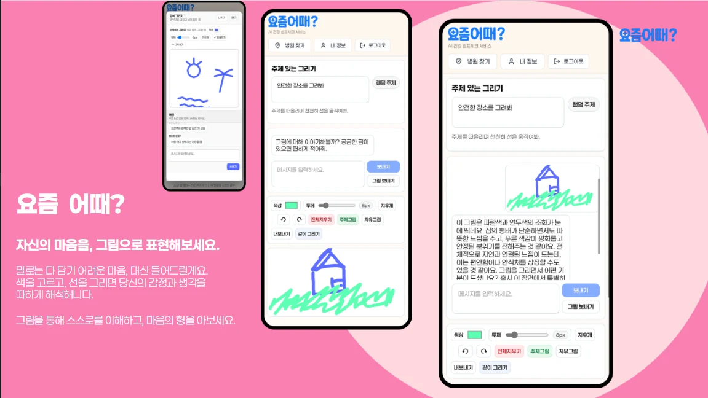
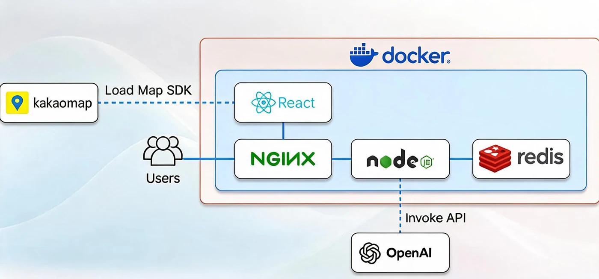

프로젝트 개요
"검색 대신 30초 체크"를 목표로 한 건강 상담 서비스입니다. 증상을 입력하면 의료 QA 7,594건에서 관련 자료를 찾아 [출처 N] 번호와 함께 LLM 답변의 근거로 연결하고, 상담 내용을 바탕으로 진료과와 주변 병원 · 약국을 안내합니다.
5인 팀(백엔드 · 프론트엔드 · 마케터 · AI 2명)에서 AI 담당 중 한 명으로, 증상-질환 데이터를 LLM 학습 형식으로 바꾸고 GPT-4.1 mini를 파인튜닝했습니다. 파인튜닝한 모델은 상담 API의 기본 모델로 쓰였습니다.
대상2025 SUMTECH 해커톤 (정보통신기획평가원장상)
18,990건증상-질환 데이터 (10개 질환)
7,594건검색 대상 의료 QA
의료 QA 검색(Elasticsearch), 상담 프롬프트, 서버 · 배포는 팀원이 맡았습니다. "서비스 구조"는 팀 전체 시스템 설명이고, 직접 한 일은 "담당 기능"에 따로 적었습니다.
문제 정의
- 병원 방문의 부담 - 가벼운 증상은 시간 · 비용 때문에 병원 가기를 미루게 됨
- 믿기 어려운 정보 - 인터넷 건강 정보는 광고가 많아 신뢰하기 어려움
- 판단의 불안 - 증상이 얼마나 심각한지 스스로 판단하기 어려워 방치하거나 진료가 늦어짐
- 타깃 - 타지에서 생활하는 대학생을 1순위로, 어린 자녀를 둔 부모, 노인을 부양하는 보호자로 확장
주요 화면

증상 상담: 의료 QA를 출처 번호와 함께 답변에 연결

병원 · 약국 안내 등 추가 기능
서비스 구조 (팀)

팀 시스템 구성도 (발표자료)
상담 요청 처리 흐름
사용자 질문익명 ID + 메시지
→
대화 이력Redis · 최근 4쌍
→
의료 QA 검색Elasticsearch 상위 5건
→
근거 구성상위 3건 · [출처 N]
→
상담 답변파인튜닝 GPT-4.1 mini
진한 테두리: 직접 파인튜닝한 모델이 들어간 단계
- 검색 - 한국어 형태소 분석기(Nori)에 의료 용어 사전 · 동의어를 적용하고, 질문 · 답변 · 선택지 필드에 서로 다른 가중치
- 근거 제시 - 검색 상위 3건을 진료과 · 분야와 함께 [출처 N]으로 붙이고, 참고 자료에 없으면 모른다고 답하도록 지시
- 답변 구성 - 상황 요약 · 위험도(낮음 · 중간 · 높음) · 자기관리 팁 · 권장 진료과 · 응급 신호를 반드시 포함하도록 지시
- 장애 대응 - 검색이 실패해도 상담은 근거 없이 계속 진행하고, 답변의 반복 문장은 후처리로 제거
학습 데이터
증상 문장과 질환명이 짝지어진 데이터로, 질환 10개 · 총 18,990건(학습 13,306 · 검증 2,793 · 테스트 2,891)입니다. 문장 길이는 평균 약 50자로 짧고, 질환별 건수 차이가 컸습니다.
질환별 건수 (학습 · 검증 · 테스트)
학습 데이터 기준 가장 많은 질환(편두통)과 가장 적은 질환(염좌)의 차이는 약 15.8배입니다.
담당 기술
| 영역 | 사용 기술 |
|---|
| 데이터 변환 | Python · JSON / JSONL · OpenAI 파인튜닝 형식(채팅 · 함수 호출) |
| 모델 | OpenAI 파인튜닝 GPT-4.1 mini |
| 팀 시스템 | Elasticsearch 8.14 + Nori · Node.js · Express · Redis 7 · React 18 · Nginx · Docker Compose(서비스 7개) |
담당 기능
- 학습 데이터 구성 - 증상-질환 데이터를 학습 · 검증으로 나눠 JSON · JSONL로 정리
- 채팅 형식 변환 - "의료 질병 분류 전문가" 시스템 지시 → 증상 문장 → "질환명(영문명)" 답변 형식
- 함수 호출 형식 변환 - 질환명(한글 · 영문)을 인자로 받는
classify_disease 함수를 정의하고, 각 샘플을 "증상 문장 → 함수 호출" 대화로 바꾸는 스크립트 작성
- GPT-4.1 mini 파인튜닝 - 학습 13,306건 · 검증 2,793건으로 파인튜닝. 완성된 모델은 상담 API의 기본 모델로 설정됨(서버 연동은 팀원)
트러블슈팅
① 분류 데이터를 대화형 LLM 학습 데이터로: 13,306건을 두 가지 형식으로 변환
문제원본 데이터는 "증상 문장 · 질환 번호 · 질환명" 형태여서 대화형 LLM 파인튜닝에 그대로 쓸 수 없었습니다.
원인LLM 파인튜닝은 대화(메시지 목록) 단위 데이터를 받습니다. 또 서버가 결과를 받아 쓰려면 자유 문장보다 정해진 필드가 다루기 쉽습니다.
해결같은 데이터를 두 가지로 만들었습니다. 하나는 시스템 지시 · 증상 · "질환명(영문명)" 답변으로 된 채팅 형식, 다른 하나는 한글 · 영문 질환명을 인자로 받는 함수 호출 형식입니다. 원본의 학습 · 검증 분할은 그대로 유지했습니다.
결과학습 13,306건 · 검증 2,793건으로 GPT-4.1 mini를 파인튜닝했고, 이 모델이 상담 API의 기본 모델로 쓰인 서비스로 팀은 SUMTECH 해커톤 대상을 받았습니다.
함수 호출 형식 학습 레코드 구조
messages: user(증상 문장) → assistant(tool_calls: classify_disease)
arguments: disease_korean, disease_english, confidence
tools: 함수 정의 · parallel_tool_calls: false
회고
모델 성능보다 먼저 결과를 좌우한 것은 데이터를 어떤 형식으로 넣느냐였습니다. 같은 데이터라도 채팅 형식과 함수 호출 형식은 모델이 배우는 출력이 다르다는 것을 직접 만들어 보며 이해했습니다.
대회가 끝난 뒤 코드를 다시 점검하며 부족한 점을 정리했습니다.
- 학습 목적과 사용 방식의 차이 - 모델은 질환 분류 형식으로 학습했지만, 서비스에서는 함수 호출 없이 상담 답변 생성에 쓰였습니다. 학습 데이터를 만들기 전에 모델이 실제로 어떤 입력을 받고 무엇을 출력해야 하는지 먼저 맞췄어야 했습니다.
- 의미 없는 필드 - 함수 호출 형식의 신뢰도(confidence) 값이 실제 확률이 아니라 질환 번호에 따라 정한 고정값이었습니다.
- 평가 부재 - 테스트 2,891건이 있었지만 파인튜닝 전후 정확도를 재지 않았고, 15.8배 클래스 불균형도 따로 다루지 않았습니다.
지금이라면 사용 시나리오를 먼저 정하고, 테스트 세트로 질환별 정확도를 잰 뒤 모델을 서비스에 넣겠습니다.
발표자료: SUMTECH 해커톤 PDF